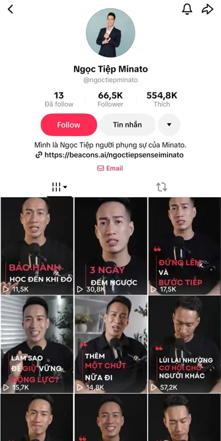

Deeplab Media · Production house
Video, TikTok và 3D cho doanh nghiệp
TVC 3D Dior · Deeplab sản xuấtKênh Ngọc Tiệp Minato từ 100 lên 66,5K follower
Kênh TikTok Ngọc Tiệp Minato tăng từ 100 lên 66,5K follower khi Deeplab Media vận hành trọn gói: kịch bản, quay, dựng, thumbnail và lịch đăng. Video cao nhất đạt 1,6 triệu lượt xem.

01Bài toán
Kênh bắt đầu với 100 follower, chủ đề động lực · phát triển bản thân. Việc cần giải không phải một video viral, mà là ba thứ: có video đều mỗi tuần, một format để người xem nhận ra kênh, và biết video nào giữ chân người xem để làm tiếp.
02Cách làm
- Viết kịch bản và lên chủ đề theo tuần
- Quay và dựng video dọc 9:16
- Thiết kế thumbnail và format series để người xem nhận ra kênh
- Lên lịch đăng đều và theo dõi video nào giữ chân người xem tốt
03Kết quả
- Follower lúc bắt đầu
- 100
- Follower hiện tại
- 66,5K×665
- Video cao nhất
- 1,6Mviews
- Chủ đề
- Động lực · phát triển bản thân
Kênh thường bắt đầu tăng rõ từ 3 tháng, tuỳ nội dung và nhịp đăng.
04Video nổi bật
- Video 1
- 1,6M lượt xem
- Video 2
- 650K lượt xem
- Video 3
- 612K lượt xem
- Nền tảng
- TikTok @ngoctiepminato
Số liệu chụp trực tiếp từ nền tảng, không phải ước tính. Deeplab không cam kết lượt xem; cam kết đủ video, đúng lịch và báo cáo video hiệu quả.
05Áp dụng cho doanh nghiệp của bạn
Cách làm này dùng được cho spa, nhà hàng, phòng khám và shop: nhân viên của bạn lên hình, Deeplab viết kịch bản, quay tại cơ sở, dựng và lên lịch đăng. Muốn xem trước khi ký theo tháng? Gói thử 1 tháng có 12 video trong 4 tuần, không ràng buộc.
Muốn kênh của bạn đăng đều như vậy? Gửi brief qua Zalo, nhận báo giá trong 24 giờ.